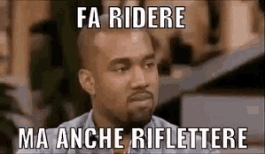
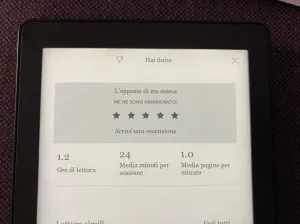

L'opposto di me stessa, Meg Mason, HarperCollins, 2022
Home › Blog
Ammartaggio
Perché quando la sofferenza è inevitabile, l’unica cosa che si può scegliere è lo scenario.
Martha ha quarant’anni e una vita apparentemente perfetta, un uomo che la venera dall’infanzia e
una famiglia stramba ma piena d’amore.
Eppure è infelice.
Tutto inizia in medias res, per chiarirci immediatamente almeno tre punti: Martha è ad un matrimonio e vorrebbe essere ovunque
tranne che lì, con chiunque tranne che con suo marito e chiunque tranne che se stessa. Questo è ciò che mi ha spinta a leggere questo
libro, oltre ovviamente al nome della protagonista, che si sente così poco e che amo così tanto… egocentrismo a parte, il voler essere
chiunque tranne che se stessi è capitato a tutti, ma sicuramente in misura inferiore rispetto che a me.
Tutto ciò non per parlare sempre di me, myself and i , ma per invogliare a sfogliare tutte le pagine di questo
meraviglioso bestseller che ha scalato le classifiche inglesi.
Martha è malata, una malattia che non viene nominata se non con il “-” ma che viene descritta magistralmente. Inizialmente,
infatti, ci si chiede subito quale sia - come direbbe sua sorella - il suo cazzo di problema. Inutile negarlo, e molto noioso tu
se lo stai facendo. Siamo una società ipergiudicante e più utilizziamo frasi come body positivity, i nostri amici a quattro zampe,
diversamente abile, uomo di colore, allora ci si divertiva con niente, non fare agli altri ciò che non vuoi venga fatto a te , più me
ne convinco. Io stessa, Signor Giudice , ne sono colpevole. Metà della mia vita, per ora, è stata rovinata da questo enorme stupido cane
che si morde la coda: giudico me stessa, penso che anche gli altri facciano altrettanto con me, ricambio con la stessa moneta. Perciò non
dico mai di no, faccio la metà delle cose che vorrei fare e tutte quelle che non vorrei fare, ma soprattutto pretendo che chi mi circonda
si comporti ugualmente. Questo gioco a volte cessa di compiersi per qualche istante, quando il mio Patrick - altro motivo che mi ha
spinta a leggere questo romanzo - mi dice che le persone non pensano tanto quanto me, “Soprattutto non pensano a te”. Ma il più delle
volte continua con me che mi giudico perché giudico troppo. Il motivo non so dirlo, o meglio, ho diverse ipotesi ma mi è sempre
interessato più risolvere che scoprire l’origine - per questo non ho scelto Medicina - : sono del segno dei Gemelli, sono un’insicura cronica,
ho scarsissima concentrazione, vivo in un paese, mia madre .

Martha invece sa l’origine di questo comportamento - e di molti altri - ma la scopre tardi.
Il tempo è relativo? Prova a dirlo a lei. Ti risponderebbe con una delle sue stecche sarcastiche alla
FleaBag ,
alla
Fran , alla
Tesio e alle innumerevoli donne di cui “me ne sono innamorato!” come mi dice il Kobo.
Quest’ultimo punto è molto importante, non solo per la bellezza che garantisce a questo romanzo,
ma come insegnamento di vita: Martha non solo conosce l’origine del "voler essere altro", sa soprattutto come usare "il suo voler essere altro".
Quando sfogli le sue parole capisci che è possibile fuggire, almeno all’apparenza, dal giudizio. Come? Raccontando di te stessa nel
peggior modo possibile, mostrandoti come una caricatura, dicendo quanto basta affinché l’interlocutore non abbia parole peggiori delle
tue da riservarti, si spazientisca e molli la presa. Attenzione: comportamento anche questo giudicato, specie dalle persone che più
amano Martha. Patrick, la madre, il padre, la sorella e la zia appaiono spesso sfiniti di fronte alla sua sfrontatezza, riempiendola
di consigli comportamentali non richiesti, oltre che di amore, perché sì, altra consapevolezza acquisita: i giudizi possono
arrivare anche da chi ti offre un kg di amore al giorno.
Questi ultimi, i personaggi che le ruotano attorno, sono forse ancora più caratterizzati della stessa.
La madre è un’alcolista in continua ricerca di attenzioni, sorda a qualsiasi richiesta d’aiuto, casinista, egoriferita e
che non smette di ripetere a Martha quanto sia speciale la sua creatività, dono che cerca per tutta la vita di rubarle progettando
innumerevoli opere d’arte con scarti trovati in casa e organizzando continue feste per i suoi adorati radical chic incalliti. Tutto
ciò viene sopportato per lunghi anni dal padre, il quale viene occasionalmente sbattuto fuori di casa per un eccesso di emotività,
incompetenza, scarsa abilità o fama. Sebbene non sia difficile affezionarsi a lui, la Marta - io, non la protagonista - psicologa si
è maggiormente legata a Celia. Il loro rapporto è stupendamente tragico, come ogni rapporto madre-figlia, ma con un motivo in più, che
ovviamente non rivelerò, e che mostra perfettamente il pericolo del non detto, tema su cui potrei scrivere una tesi, ma che è
bene l’abbia fatto
Meg prima di me.
Mi limiterò dunque a descrivere il marito, Patrick, l’uomo perfetto, a discapito di quanto ho
sentito da altri. Ok, anche Patrick cade nel tranello del non detto, ma a differenza della madre non scappa, a meno che sia cacciato
brutalmente. E soprattutto ama come io penso, ad oggi, che si debba amare: con silenzio, intensità, attenzione, sopportazione, sofferenza,
dedizione, devozione, comprensione, apertura, cura e a tratti sì, arrendevolezza. Ogni loro dialogo fa emergere la logorrea di Martha
e l’adorazione di Patrick, ma non bisogna lasciarsi persuadere dalla sua bontà. Non voglio sembrare una
bimba di Patrick, ma sicuramente
parteggio per chi ha il coraggio di silenziarsi e scomparire per dar spazio a problemi o persone che richiedono maggiore attenzione
- più che chiacchiere o analisi - in quel momento. E su questo, Patrick, è decisamente un pro, quasi più di me.
Aprì il file sul suo computer per insegnarmi a usarlo. Gli dissi che vedere così tanti numeri insieme mi avrebbe fatto
scendere una membrana invisibile sotto le palpebre. […] C’erano un sacco di categorie, tra cui una che si chiamava Imprevisti di
Martha. Gli dissi che non immaginavo tenesse il bilancio in un modo degno della Stasi. Mi rispose che non immaginava come qualcuno
potesse suggerire, in alternativa a un foglio di calcolo, un file Word sul cellulare e la calcolatrice. […] Più avanti, Patrick disse
che era davvero incredibile quanti Imprevisti una persona potesse attrarre.
Infine, se Martha è sarcasmo, la sorella Ingrid è umorismo puro. E, sebbene basti Martha ad alleggerire il tema, Ingrid dà quella finta stupidità
in più di cui necessitiamo. Non so cosa significhi realmente avere una sorella, capisco alcuni tratti del rapporto avendo una cugina
che è nata un mese prima di me e che continua a vivere con me, ma quelle rarissime volte in cui me lo immagino, me lo dipingo
esattamente come il loro: un’opera di Picasso, incasinata e colorata. Non ci sono silenzi, ma ogni chiacchierata non ha mai la
sola funzione di aggiornarsi o interessarsi l’una dell’altra, il vero fine di ogni dialogo è arrivare al momento preferito di
entrambe: emoticon e video di Kate Moss che è più in declino di loro, e per questo molto divertente. Ingrid appare l’insopportabile
della famiglia, la persona che meno gradisci in un gruppo, specie universitario. La classica che “Non volevo prendere quel trenta”
o ancora “Non pensavo di essere la prima”. Tutto ciò che desidera si avvera e - guarda un po’ la casualità della vita - quando
ce l’ha non lo vuole più. Ma in realtà siamo sicuri che proprio non lo voglia? Ingrid è il lamento fatto a persona, ma con una
gerarchia ben impressa nella mente: ogni nuovo figlio viene annunciato dopo ogni crisi di Martha. E per Ingrid i figli sono le
sue crisi, ma ci sono crisi e crisi: perfetta dimostrazione di sorellanza, forse ancora più esemplare della sorellanza di Winsome.
Winsome è una zia elegante, silenziosa e osservatrice, l’opposto di sua sorella. Ha dovuto crescere tutti, specie sua sorella, per
questo si impone autorevolezza, fermezza, costanza e freddezza, e li impone a chi deve sorreggere - ovviamente chiunque, un altro
enorme stupido cane che si morde la coda, ma che per fortuna non mi appartiene -. Eppure è come penso un cattolico si idealizzi Dio:
invisibile ma sempre presente e, soprattutto, disponibile. C’è quando Martha divorzia, quando Martha litiga con sua madre, con
Patrick, con sua sorella, quando Martha è senza casa, quando non vuole tornare a casa, quando Martha è senza lavoro, quando Martha
è stanca ma soprattutto… quando è Natale!
La cremazione non fu peggiore di un Natale in famiglia.
La struttura del testo permette al lettore di comprendere pian piano il motivo dell’infelicità di Martha,
non solo perché di dominio pubblico nella sua famiglia - dunque abbiamo tanti punti di vista quanti i personaggi -
ma soprattutto perché Martha ha quarant’anni nella prima pagina, dieci nella seconda, venti nella terza, trenta nella quarta.
Cresciamo insieme a lei, comprendiamo insieme a lei, piangiamo insieme a lei e ridiamo insieme a lei, accompagnati da Meg in
una vita che scorre come un fiume: stretta, prepotente, veloce, perenne, dolce e grave. Perciò non vorrei che da questo
scritto ci si aspetti “La guida per risolvere una vita imperfetta”, vorrei piuttosto che venisse usato come uno specchio,
specie dalle donne, le donne che conosco io, le donne di oggi, le donne che non hanno timore di rispecchiarsi ma che riescono
anche a comprendere le diverse gravità. E qui, di gravità, ce n’è molta. Eppure, completi il tuo ebook, come me, e - “Me ne sono
innamorato!” - sospiri, perché in fondo non vuoi essere lei, perché in fondo non sei lei e perché in fondo non vuoi essere nessun
altro a parte te. Finalmente.

Mi auguro, insomma, più Robert e meno Jonathan. Perché non si scappa mai dai giudizi,
specie propri, ma si può crescere, rimproverarsi col fine di perdonarsi e migliorarsi:
Per tutta la vita ho creduto che le cose accadessero a me. Cose orribili: l’infanzia,
mia madre pazza/morta, mio padre scomparso, la perdita di Winsome come sorella per il fatto
che ha dovuto crescermi, tuo padre che non ha avuto successo, questa casa, vivere in un posto
che non sopporto, il bere, l’essere diventata un’alcolista. E così via, tutto questo accadeva a me. […]
Ma da allora ho capito: le cose accadono. Cose terribili, e tutto ciò che ognuno di noi può fare è decidere
se succedono a noi o se, almeno in parte, succedono per noi.
P.s. Per la rubrica "Appassionata di copertine etc." il giallo senape con il verde petrolio
mi ha convinta ancor prima della sinossi, quindi consiglio che non sentirete spesso: comprate il cartaceo.
Continua a leggere

Tomorrow, Gabrielle Zevin, Nord, 2022
10 Maggio 2025
Alla veneranda età di 26 anni ho approcciato per la prima volta agli audiolibri come antidoto contro la noia di
camminare per andare al lavoro. Non sono il tipo che cammina per sport né per piacere. Cammino per necessità.
Leggi l’articolo

Klara e il sole, Kazuo Ishiguro, Einaudi, 2021
16 Giugno 2022
Ho letto giusto due giorni fa la conversazione tra un ingegnere di Google,
Blake Lemoine, e la sua LaMDA, un’intelligenza artificiale utilizzata per generare chatbot che interagiscono con gli utenti.
Qui trovate la reale conversazione avvenuta tra l’ingegnere e l’IA che ha tutto a che vedere con una qualsiasi interazione che...
Leggi l’articolo

Monsieur Solitaire, 4321, Paul Auster, Einaudi, 2017
1 Settembre 2024
Cosa sarebbe stato della nostra vita se invece di quella scelta ne avessimo fatta un'altra?
Che persone saremmo oggi se quel giorno non avessimo perso il treno, se avessimo risposto al saluto di quella ragazza,
se ci fossimo iscritti a quell'altra scuola, se... Ogni vita nasconde, e protegge, dentro di sé tutte le altre che non si sono realizzate,
che sono rimaste solo potenziali...
Leggi l’articolo

Due chicche per gli amanti dei libri sui libri
1 Settembre 2024
Due libri per chi è "del mestiere", ossia due libri che potrebbero piacere maggiormente
ai rari esemplari che hanno deciso di fare il dottorato o, ancor peggio, di entrare nel mondo dell'editoria.
Leggi l’articolo

La simmetria dei desideri, E. Nevo, Neri Pozza, 2010
21 Luglio 2022
Accanto ad uno dei miei scrittori preferiti, David Grossman - leggetelo - , c'è ormai da
parecchi anni un altro dei massimi scrittori israeliani viventi: Eshkol Nevo.
Mi sono, però, avvicinata da poco a quest'ultimo, tramite:
Leggi l’articolo

Ballo di famiglia, David Leavitt, SEM, 2021
17 Maggio 2021
Non voglio dire che le famiglie italiane siano migliori – se ancora ne esistono -,
ma dopo aver letto anche solo uno di questi racconti converrete con me che forse forse ci è andata ancora bene.
Leggi l’articolo